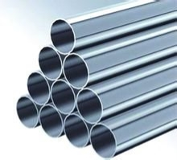

金属材料
金属材料是指金属元素或以金属元素为主构成的具有金属特性的材料的统称。包括纯金属、合金、金属材料金属间化合物和特种金属材料等。 (注:金属氧化物(如氧化铝)不属于金属材料)
包含：纯金属、合金、金属材料金属间化合物和特种金属材料等
（注意 ：金属氧化物不属于金属材料）
金属材料一般是指工业应用中的纯金属或合金。自然界中大约有70多种纯金属，其中常见的有铁、铜、铝、锡、镍、金、银、铅、锌等等。而合金常指两种或两种以上的金属或金属与非金属结合而成,且具有金属特性的材料。常见的合金如铁和碳所组成的钢合金;铜和锌所形成的合金为黄铜等。
金属材料通常分为黑色金属、有色金属和特种金属材料。
①黑色金属又称钢铁材料，包括含铁90%以上的工业纯铁，含碳 2%～4%的铸铁，含碳小于 2%的碳钢，以及各种用途的结构钢、不锈钢、耐热钢、高温合金金属材料、精密合金等。广义的黑色金属还包括铬、锰及其合金。
②有色金属是指除铁、铬、锰以外的所有金属及其合金，通常分为轻金属、重金属、贵金属、半金属、稀有金属和稀土金属等。有色合金的强度和硬度一般比纯金属高，并且电阻大、电阻温度系数小。
③特种金属材料包括不同用途的结构金属材料和功能金属材料。其中有通过快速冷凝工艺获得的非晶态金属材料，以及准晶、微晶、纳米晶金属材料等；还有隐身、抗氢、超导、形状记忆、耐磨、减振阻尼等特殊功能合金以及金属基复合材料等。
一般分为工艺性能和使用性能两类。所谓工艺性能是指机械零件在加工制造过程中，金属材料在所定的冷、热加工条件下表现出来的性能。金属材料工艺性能的好坏，决定了它在制造过程中加工成形的适应能力。由于加工条件不同，要求的工艺性能也就不同，如铸造性能、可焊性、可锻性、热处理性能、切削加工性等。所谓使用性能是指机械零件在使用条件下，金属材料表现出来的性能，它包括力学性能、物理性能、化学性能等。金属材料使用性能的好坏，决定了它的使用范围与使用寿命。在机械制造业中，一般机械零件都是在常温、常压和非常强烈腐蚀性介质中使用的，且在使用过程中各机械零件都将承受不同载荷的作用。金属材料在载荷作用下抵抗破坏的性能，称为力学性能（过去也称为机械性能）。金属材料的力学性能是零件的设计和选材时的主要依据。外加载荷性质不同（例如拉伸、压缩、扭转、冲击、循环载荷等），对金属材料要求的力学性能也将不同。常用的力学性能包括：强度、塑性、硬度、冲击韧性、多次冲击抗力和疲劳极限等。
疲劳
许多机械零件和工程构件，是承受交变载荷工作的。在交变载荷的作用下，虽然应力水平低于材料的屈服极限，但经过长时间的应力反复循环作用以后，也会发生突然脆性断裂，这种现金属材料象叫做金属材料的疲劳。
金属材料疲劳断裂的特点是：
⑴载荷应力是交变的；
⑵载荷的作用时间较长；
⑶断裂是瞬时发生的；
⑷无论是塑性材料还是脆性材料，在疲劳断裂区都是脆性的。
所以，疲劳断裂是工程上最常见、最危险的断裂形式。
金属材料的疲劳现象，按条件不同可分为下列几种：
⑴高周疲劳：指在低应力（工作应力低于材料的屈服极限，甚至低于弹性极限）条件下，应力循环周数在100000以上的疲劳。它是最常见的一种疲劳破坏。高周疲劳一般简称为疲劳。
⑵低周疲劳：指在高应力（工作应力接近材料的屈服极限）或高应变条件下，应力循环周数在10000~100000以下的疲劳。由于交变的塑性应变在这种疲劳破坏中起主要作用，因而，也称为塑性疲劳或应变疲劳。
⑶热疲劳：指由于温度变化所产生的热应力的反复作用，所造成的疲劳破坏。
⑷腐蚀疲劳：指机器部件在交变载荷和腐蚀介质（如酸、碱、海水、活性气体等）的共同作用下，所产生的疲劳破坏。
⑸接触疲劳：这是指机器零件的接触表面，在接触应力的反复作用下，出现麻点剥落或表面压碎剥落，从而造成机件失效破坏。
塑性
塑性是指金属材料在载荷外力的作用下，产生永久变形（塑性变形）而不被破金属材料坏的能力。金属材料在受到拉伸时，长度和横截面积都要发生变化，因此，金属的塑性可以用长度的伸长（延伸率）和断面的收缩（断面收缩率）两个指标来衡量。
金属材料的延伸率和断面收缩率愈大，表示该材料的塑性愈好，即材料能承受较大的塑性变形而不破坏。一般把延伸率大于百分之五的金属材料称为塑性材料（如低碳钢等），而把延伸率小于百分之五的金属材料称为脆性材料（如灰口铸铁等）。塑性好的材料，它能在较大的宏观范围内产生塑性变形，并在塑性变形的同时使金属材料因塑性变形而强化，从而提高材料的强度，保证了零件的安全使用。此外，塑性好的材料可以顺利地进行某些成型工艺加工，如冲压、冷弯、冷拔、校直等。因此，选择金属材料作机械零件时，必须满足一定的塑性指标。
耐久性
建筑金属腐蚀的主要形态
①均匀腐蚀。金属表面的腐蚀使断面均匀变薄。因此，常用年平均的厚度减损值作为腐蚀性能的指标（腐蚀率）。钢材在大气中一般呈均匀腐蚀。
②孔蚀。金属腐蚀呈点状并形成深坑。孔蚀的产生与金属的本性及其所处介质有关。在含有氯盐的介质中易发生孔蚀。孔蚀常用最大孔深作为评定指标。管道的腐蚀多考虑孔蚀问题。
③电偶腐蚀。不同金属的接触处，因所具不同电位而产生的腐蚀。
④缝隙腐蚀。金属表面在缝隙或其他隐蔽区域部常发生由于不同部位间介质的组分和浓度的差异所引起的局部腐蚀。
⑤应力腐蚀。在腐蚀介质和较高拉应力共同作用下，金属表面产生腐蚀并向内扩展成微裂纹，常导致突然破断。混凝土中的高强度钢筋（钢丝）可能发生这种破坏。
硬度
硬度表示材料抵抗硬物体压入其表面的能力。它是金属材料的重要性能指标之一。一般硬度越高，耐磨性越好。常用的硬度指标有布氏硬度、洛氏硬度和维氏硬度。
⒈布氏硬度（HB）以一定的载荷（一般3000kg）把一定大小（直径一般为10mm）的淬硬钢球压入材料表面，保持一段时间，去载后，负荷与其压痕面积之比值，即为布氏硬度值（HB），单位为公斤力/mm2 (N/mm2）。
⒉洛氏硬度（HR）当HB>450或者试样过小时，不能采用布氏硬度试验而改用洛氏硬度计量。它是用一个顶角120°的金刚石圆锥体或直径为1.59、3.18mm的钢球，在一定载荷下压入被测材料表面，由压痕的深度求出材料的硬度。根据试验材料硬度的不同，可采用不同的压头和总试验压力组成几种不同的洛氏硬度标尺，每一种标尺用一个字母在洛氏硬度符号HR后面加以注明。常用的洛氏硬度标尺是A,B,C三种（HRA,HRB,HRC）。其中C标尺应用最为广泛。
HRA：是采用60kg载荷钻石锥压入器求得的硬度，用于硬度极高的材料（如硬质合金等）。
HRB：是采用100kg载荷和直径1.58mm淬硬的钢球，求得的硬度，用于硬度较低的材料（如退火钢、铸铁等）。
HRC：是采用150kg载荷和钻石锥压入器求得的硬度，用于硬度很高的材料（如淬火钢等）。
3 维氏硬度（HV）以120kg以内的载荷和顶角为136°的金刚石方形锥压入器压入材料表面，用材料压痕凹坑的表面积除以载荷值，即为维氏硬度值(HV）。
硬度试验是机械性能试验中最简单易行的一种试验方法。为了能用硬度试验代替某些机械性能试验，生产上需要一个比较准确的硬度和强度的换算关系。实践证明，金属材料的各种硬度值之间，硬度值与强度值之间具有近似的相应关系。因为硬度值是由起始塑性变形抗力和继续塑性变形抗力决定的，材料的强度越高，塑性变形抗力越高，硬度值也就越高。
一、金属在生活中的应用
炊具
从烤制烤鸭的烤炉，到烤面包的烤箱，再到我们吃时用的刀叉，无一不是金属制成的；各种各样的炒锅，炉灶，抽油烟机等炊具，也无一不是金属制成的。
（烤炉烤箱：使用全不锈钢面板结构，永不生锈，坚固耐用；炒锅：传统炒锅主要由铁制成，铁锅注意不要经常烹饪液体食物以防生锈；抽油烟机：机壳目前也比较流行采用钢化玻璃和不锈钢材料。风轮由硅合金铝片冲压而成，经久耐用不变型，动平衡性能好。
风道：由冷轧薄钢板表面喷塑处理而成）
金属包装材料
1、易拉罐
大部分易拉罐为铝制或钢制，作为啤酒和碳酸饮料的包装形式极其方便。当代社会对易拉罐的回收和再利用至关重要。
2、铝箔真空包装
铝箔袋包装通常指的是铝塑复合真空包装袋，此类产品具有良好的隔水、隔氧功能。可以量体定做多种样式。
Ⅱ
二、金属在工业中的应用
航空航天
铝合金
特点：比模量与比强度高、耐腐蚀性能好、加工性能好、成本低廉等，被认为是航空航天工业中用量最大的金属结构材料。主要用作航空航天结构的承载结构。
（比模量是材料的模量与密度之比，是材料承载能力的一个重要指标，比模量越大,零件的刚性就愈大，也称为“比刚度”或“比弹性模量”，单位为m）
钛合金
特点：与铝、镁、钢等金属材料相比，钛合金具有比强度很高、抗腐蚀性能良好、抗疲劳性能良好、热导率和线膨胀系数小等优点，可以在350~450℃以下长期使用，低温可使用到-196℃。用于航空发动机的压气机叶片、机匣以及机体主承力构件。
（抗疲劳性：轴承材料抵抗疲劳破坏的性能；线膨胀系数：物理名词，有时也称为线弹性系数，指固体物质的温度每改变1℃时，其长度的变化和它在0℃时长度之比。单位为1/开。符号为αl。）
高温合金用于航天领域的高温合金中以镍基高温合金应用最为广泛，常用做航天发动机涡轮盘和叶片的材料。
（高温金属：指在650°C以上温度下具有一定力学性能和抗氧化、耐腐蚀性能的合金。目前常是镍基、铁基、钴基高温合金的统称。）超高强度钢超高强度钢具有很高的抗拉强度和足够的韧性，并且有良好的焊接性和成形性。飞机起落架、火箭发动机壳体、发动机喷管和各级助推器。
（抗拉强度：材料在拉伸断裂前所能够承受的最大拉应力。）
汽车
铝合金 代替钢铁降低汽车自重，全铝轿车全新的轻量化结构，使车身重量比传统钢制车身轻40%以上。
镁
镁是一种轻质的银白色金属，在镁材中添加一些其它的金属元素，例如铝、锌或者铝、锰等，它就会改变了自己的特征，变成了一种具有较高强度和刚度，具有良好铸造性能和减振性能的轻质合金材料，这些镁合金材料在现代汽车中已得到广泛的应用。用于车上的座椅骨架、仪表盘、转向盘和转向柱、轮圈、发动机气缸盖、变速器壳、离合器壳等零件，其中转向盘和转向柱、轮圈是应用镁合金较多的零件。
（刚度：结构或构件抵抗弹性变形的能力，用产生单位应变所需的力或力矩来量度。）
铜合金材料
超大规模集成电路引线框架用高强高导铜合金及其先进制备和精密加工技术，
涉及的合金体系有Cu—Fe—P系、Cu—Ni—Si系、Cu—Cr-Zr系等，前两种合金体系已形成产业化生产规模；军事工业及电子、电工及汽车业涉及的合金体系有Cu—A1203、Cu—TiB2等。
钛合金材料
钛材料具有轻质、高强度等性能。目前的赛车几乎都使用了钛材。汽车用钛部件主要包括：阀：可以减轻重量，延长使用寿命，而且可靠性高，还可节省燃油。连杆：对减轻发动机重量最有效，能大大提高性能。
三、医学方面
钛合金：人造关节、骨架，
其他：口腔（补牙、正歧）
四、稀土金属
{kind=link}
{kind=link}
{kind=link}